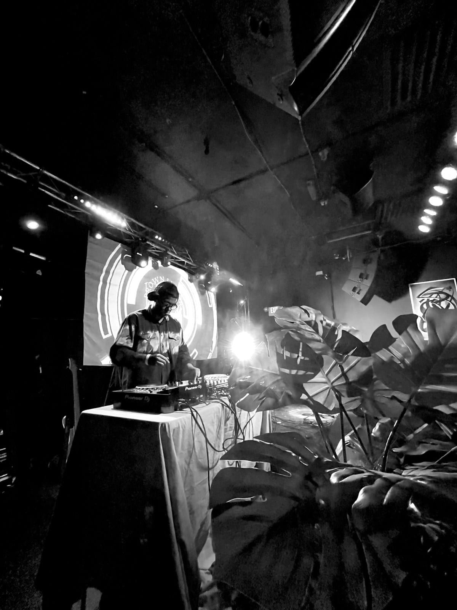

MUSIC
What does Boulder sound like?
Boulder sounds like sound baths, ecstatic dance, kirtan and electronic DJs, with the songwriters out at the edges. Here is where to hear it, and who we’d put in front of your guests.

A group is coming to Boulder. It could be a company offsite at a hotel off Pearl Street, or a wedding on a lawn under the Flatirons. The host wants the evening to feel like Boulder, and the guests from out of state are probably picturing John Denver.
Boulder looks more like Burning Man, or Bali. It sounds like sound baths, ecstatic dance, kirtan and electronic DJs. There are songwriters too, and you find them out at the edges.
Why does Boulder sound different from the rest of Colorado? #
Boulder is its own small world of spirituality and tech. Yoga and meditation are part of an ordinary week here, and the people who live that way want music that goes with it. There’s a slight aversion to the Americana and roots sound the rest of Colorado loves.
So where Denver has neo-soul and funk, Boulder has a DJ, a dance floor and nobody wearing shoes. We wrote about the rest of the state in What music is Colorado known for?
Where can a visitor hear it? #
The StarHouse is about three and a half miles up Sunshine Canyon, west of town. People go there for kirtan, which is chanting in call and response, and for dance nights.
Naropa University, the Buddhist-inspired school on Arapahoe Avenue, has put on kirtan and raga concerts of its own. In town there’s a weekly ecstatic dance, where people dance barefoot and nobody talks on the floor.
For most visitors, Pearl Street still has the dining and entertainment that pleases a group without anyone having to search hard.
Who plays the big stages? #
Boulder is where the bigger touring acts stop, the way Red Rocks is for Denver. The Boulder Theater is downtown, the Fox Theatre is up on University Hill, eTown Hall is a converted church, and Chautauqua Auditorium sits at the foot of the Flatirons.
The 2026 calendar at Chautauqua had Herbie Hancock, Taj Mahal and Rosanne Cash on it. The jam bands come through too. That’s a great night out for your guests, and it means less of what you hear in Boulder is home-grown.
Where are the home-grown songwriters? #
At the edges. Sarah Banker lives up the canyon in Nederland, and she writes uplifting songs and means every word.
Nederland also has the Ned Jazz & Wine Fest every August, a full day of music in a park by the creek, hosted by Stephanie Andelman and her crew.
Who would we put in front of a group in Boulder? #
When a group at the St Julien or the Boulderado asks for something very Boulder, we pair a DJ with a live tabla player. It’s electronic music with a world sound, in the Burning Man spirit, and our Afro house DJ covers it.
A sound bath is the slower version. Your people lie down in low light for seventy-five minutes with nothing to do and nothing to say.
If the group would rather have songs, we’d put on Chelsey Webb for high-energy twang. She was named Female Entertainer of the Year at the 2025 Colorado Country Music Hall of Fame awards. Emily Barnes is the moodier choice. She won the 2025 Hey Nonny Songwriting Contest, and her songs hang in the air.
One thing we plan around: Boulder limits amplified sound outdoors late at night, so a party on a lawn or a terrace finishes its loud music and moves inside. We have more ideas for a Boulder wedding.
Is the real Boulder right for your event? #
That’s the planner’s call, and both answers are fine. If the evening is meant to be immersive, we’d go with the DJ and tabla or the sound bath. Guests will remember that they were in Boulder.
If the music sits in the background, between conversations and the program, songs people know are the safer choice. Tejas Singh is great for that. We go further into the choice in How to choose music for an event.
| The event | What fits | Who we’d put on |
|---|---|---|
| A group that came for the real Boulder | Electronic music with a world sound | The Afro house DJ with live tabla |
| A team that has been in meetings all day | A sound bath | Firstwater |
| A reception with dancing | High-energy twang | Chelsey Webb |
| A dinner or a ceremony | A singer-songwriter people stop to listen to | Emily Barnes |
| Music in the background | Songs people know | Tejas Singh |
Sources
- Visit Boulder, Live Music in Boulder. Read the source
- Visit Boulder, Boulder’s Can’t-Miss Concerts of 2026. Read the source
- Eventbrite, Kirtan with Mike Cohen & the Shakti Groove at the StarHouse. Read the source
- Sheela Bringi, Naropa Kirtan & Raga Concert. Read the source
- Ecstatic Dance, Boulder Ecstatic Dance. Read the source
- KGNU, Studio Session: Sarah Banker. Read the source
- Ned Jazz & Wine Fest, festival information. Read the source